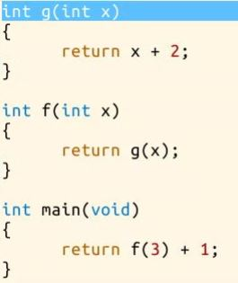
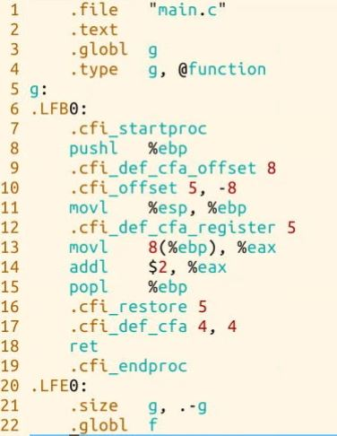
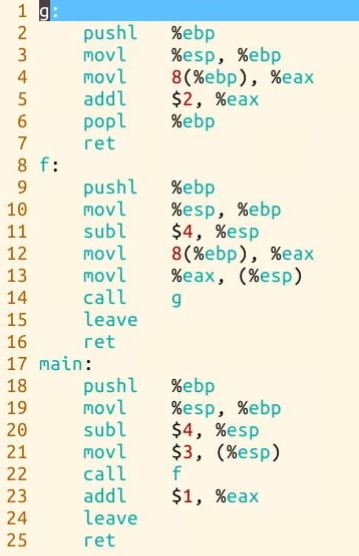

实验过程
1.实验用的C代码
使用命令 gcc –S –o main.s main.c -m32 进行汇编.

2.生成的汇编代码
上图中以 . 开头的文字是不执行的。在vim中的命令模式下，dd命令可以删除一整行，删除掉这些行后，便于我们观察。
3.分析汇编代码
计算机采用了冯诺依曼结构，程序和数据都储存在一起。计算机在运行时需要将数据取出，然后进行处理，最后得到输出。
寻址方式：
1. 立即寻址,立即数包含在指令中，作为指令的一部分。格式：$Imm
2.直接寻址,指令直接包含操作数的有效地址（偏移地址）。操作数一般存放在数据段（DS）。格式：Imm
3.寄存器寻址,操作数在CPU内部的寄存器中，指令指定寄存器号.格式：E
4.寄存器间接寻址,指令中给出寄存器编号，所需要的操作数保存在寄存器指定地址的存储单元中，即寄存器为操作数的地址指针。格式：(E)
5.变址寻址,访问寄存器中数再加上数字指向的内存。格式Imm(E)
函数调用：
函数调用使用的是栈，利用的是栈后进先出的特点。调用的调用者调用某个函数，被调用函数入栈，被调用函数运行完毕后出栈，这时函数的调用者处于栈顶，继续执行。
寄存器%ebp和%esp用来存储函数栈底和栈顶的位置。函数之间传递参数，是通过栈来传递的；函数返回结果通过%eax传递。
mov S,D;效果D=S
call指令，将返回结果入栈，并跳转到被调用过程的起始处。
ret指令，从栈中弹出地址，并跳转到这个位置。
leave指令，为返回准备栈，等价于这两句代码 movl %ebp,%esp ; popl %ebp.
视频是我自己原创的，MP4格式的。可用于非盈利用途。在我自己电脑上Chrome浏览器上可以播放。
在下初次使用html，还不会用，为了防止不能正常播放，影响阅读和给我评分，也提供pdf版本下载。点击这里下载MP4 点击这里下载PDF
这里可以看看孟老师的讲解,他讲得很详细，而且重点突出。
也可以看深入理解计算机系统（第二版）112页，操作数指示符；124页，条件码；153页，函数调用过程堆栈使用； 175页，gdb调试常用命令。